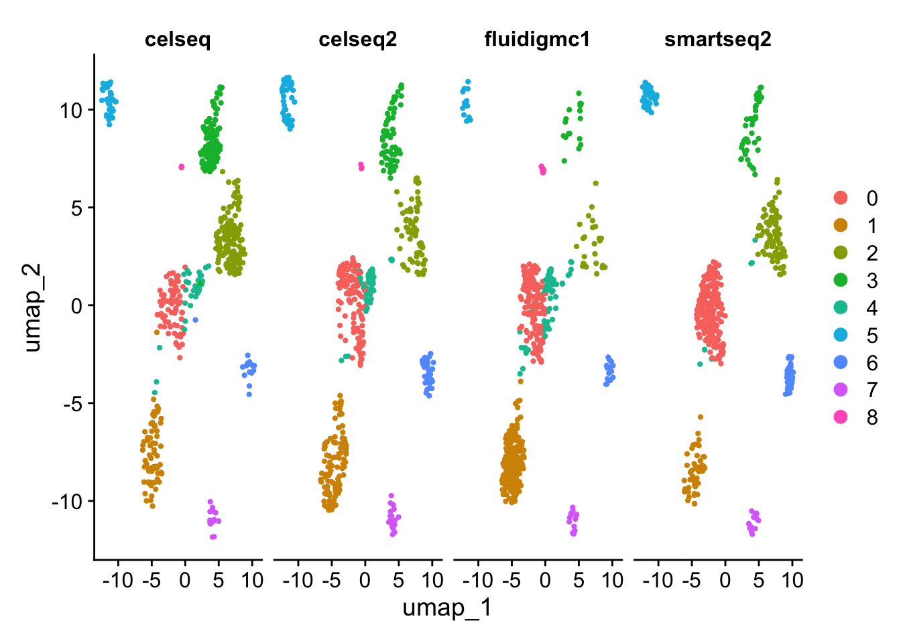

Process pancreas scRNAseq datasets from different technologies.
Merge the datasets and analyse them without batch correction.
Use Seurat to perform batch correction using canonical correlation analysis (CCA) and mutual nearest neighbors (MNN).
Use LIGER to perform batch correction using integrative non-negative matrix factorization.
In this lab, we will look at different single cell RNA-seq datasets collected from pancreatic islets. We will look at how different batch correction methods affect our data analysis.
11.1 Read in pancreas expression matrices
Four different datasets are provided in the ~/Share/batch_correction/ directory. These datasets were collected using different single cell RNA-seq technologies.
Question
Import the four datasets into R. What is the size and sparsity of each dataset?
'SeuratObject' was built under R 4.4.0 but the current version is 4.4.1; it is recomended that you reinstall 'SeuratObject' as the ABI for R may have changed
'SeuratObject' was built with package 'Matrix' 1.7.0 but the current version is 1.7.1; it is recomended that you reinstall 'SeuratObject' as the ABI for 'Matrix' may have changed
Attaching package: 'SeuratObject'
The following objects are masked from 'package:base':
intersect, t
An object of class Seurat
20148 features across 1004 samples within 1 assay
Active assay: RNA (20148 features, 2000 variable features)
3 layers present: counts, data, scale.data
An object of class Seurat
19140 features across 2285 samples within 1 assay
Active assay: RNA (19140 features, 2000 variable features)
3 layers present: counts, data, scale.data
An object of class Seurat
25463 features across 638 samples within 1 assay
Active assay: RNA (25463 features, 2000 variable features)
3 layers present: counts, data, scale.data
An object of class Seurat
26179 features across 2394 samples within 1 assay
Active assay: RNA (26179 features, 2000 variable features)
3 layers present: counts, data, scale.data
11.3 Cluster pancreatic datasets without batch correction
We will first merge all the cells from the four different experiments together, and cluster all the pancreatic islet datasets to see whether there is a batch effect.
Question
Merge the datasets into a single Seurat object.
Answer
R
# Merge Seurat objects. Original sample identities are stored in gcdata[["tech"]].# Cell names will now have the format tech_cellID (smartseq2_cell1...)add.cell.ids<-c("celseq", "celseq2", "fluidigmc1", "smartseq2")gcdata<-merge(x =celseq, y =list(celseq2, fluidigmc1, smartseq2), add.cell.ids =add.cell.ids, merge.data =FALSE)Idents(gcdata)<-"tech"# use identity based on sample identitygcdata
An object of class Seurat
33633 features across 6321 samples within 1 assay
Active assay: RNA (33633 features, 2000 variable features)
12 layers present: counts.1, counts.2, counts.3, counts.4, data.1, scale.data.1, data.2, scale.data.2, data.3, scale.data.3, data.4, scale.data.4
Modularity Optimizer version 1.3.0 by Ludo Waltman and Nees Jan van Eck
Number of nodes: 6321
Number of edges: 220127
Running Louvain algorithm...
Maximum modularity in 10 random starts: 0.9323
Number of communities: 23
Elapsed time: 0 seconds
Warning: The default method for RunUMAP has changed from calling Python UMAP via reticulate to the R-native UWOT using the cosine metric
To use Python UMAP via reticulate, set umap.method to 'umap-learn' and metric to 'correlation'
This message will be shown once per session
09:43:47 UMAP embedding parameters a = 0.583 b = 1.334
09:43:47 Read 6321 rows and found 20 numeric columns
09:43:47 Using Annoy for neighbor search, n_neighbors = 15
09:43:47 Building Annoy index with metric = euclidean, n_trees = 50
**************************************************|
09:43:47 Writing NN index file to temp file /var/folders/dg/mbw146s905lgqgswn6w4ghk80000gn/T//RtmpUlXPcm/fileb9666f16b7be
09:43:47 Searching Annoy index using 1 thread, search_k = 1500
09:43:48 Annoy recall = 100%
09:43:48 Commencing smooth kNN distance calibration using 1 thread with target n_neighbors = 15
09:43:48 Initializing from normalized Laplacian + noise (using RSpectra)
09:43:48 Commencing optimization for 500 epochs, with 127374 positive edges
09:43:53 Optimization finished
# Visualize the Leiden clustering and the batches on the UMAP. # Remember, the clustering is stored in @meta.data in column seurat_clusters and the technology is# stored in the column tech. Remember you can also use DimPlotDimPlot(gcdata, reduction ="umap", group.by ="seurat_clusters")
Are you surprised by the results? Compare to your expectations from the PC biplot of PC1 vs PC2.
What explains these results?
We can assess the quality of the clustering by calculating the adjusted rand index (ARI) between the technology and the cluster labels. This goes between 0 (completely dissimilar clustering) to 1 (identical clustering). The adjustment corrects for chance grouping between cluster elements.
We will now use Seurat to see to what extent it can remove potential batch effects.
The first piece of code will identify variable genes that are highly variable in at least 2/4 datasets. We will use these variable genes in our batch correction.
Why would we implement such a requirement?
Question
The integration workflow in Seurat requires the identification of variable genes that are variable across most samples. Use the FindIntegrationAnchors function to identify anchors on the 4 pancreatic islet datasets, commonly shared variable genes across samples, and integrate samples.
Warning: Different features in new layer data than already exists for scale.data
Warning: Different features in new layer data than already exists for scale.data
Warning: Different features in new layer data than already exists for scale.data
Warning: Different features in new layer data than already exists for scale.data
Warning in FindVariableFeatures.Assay(object = object[[assay]], selection.method = selection.method, : selection.method set to 'vst' but count slot is empty; will use data slot instead
Warning in eval(predvars, data, env): NaNs produced
Warning in hvf.info$variance.expected[not.const] <- 10^fit$fitted: number of items to replace is not a multiple of replacement length
Modularity Optimizer version 1.3.0 by Ludo Waltman and Nees Jan van Eck
Number of nodes: 6321
Number of edges: 251064
Running Louvain algorithm...
Maximum modularity in 10 random starts: 0.8658
Number of communities: 16
Elapsed time: 0 seconds
**************************************************|
09:45:32 Writing NN index file to temp file /var/folders/dg/mbw146s905lgqgswn6w4ghk80000gn/T//RtmpUlXPcm/fileb96665064fc8
09:45:32 Searching Annoy index using 1 thread, search_k = 1500
09:45:33 Annoy recall = 100%
09:45:33 Commencing smooth kNN distance calibration using 1 thread with target n_neighbors = 15
09:45:34 Found 2 connected components, falling back to 'spca' initialization with init_sdev = 1
09:45:34 Using 'irlba' for PCA
09:45:34 PCA: 2 components explained 55.6% variance
09:45:34 Scaling init to sdev = 1
09:45:34 Commencing optimization for 500 epochs, with 139426 positive edges
09:45:38 Optimization finished
# After data integration, use the original expression data in all visualization and DE tests.# The integrated data must not be used in DE tests as it violates assumptions of independence in DE tests!DefaultAssay(gcdata)<-"RNA"# Visualize the Louvain clustering and the batches on the UMAP. p1<-DimPlot(gcdata, reduction ="umap", group.by ="seurat_clusters")p2<-DimPlot(gcdata, reduction ="umap", group.by ="tech")p1+p2

Lets look again to see how the adjusted rand index changed compared to using no batch correction.
R
ari<-dplyr::select(gcdata[[]], tech, seurat_clusters)ari$tech<-plyr::mapvalues(ari$tech, from =c("celseq", "celseq2", "fluidigmc1", "smartseq2"), to =c(0, 1, 2, 3))adj.rand.index(as.numeric(ari$tech), as.numeric(ari$seurat_clusters))
[1] 0.2728
11.3.2 Differential gene expression and visualization
We can also identify conserved marker genes across the batches. Differential gene expression is done across each batch, and the p-values are combined. (requires metap package installation).
Testing group fluidigmc1: (0) vs (1, 9, 8, 5, 3, 11, 4, 2, 14, 7, 6, 13, 10, 15, 12)
For a (much!) faster implementation of the Wilcoxon Rank Sum Test,
(default method for FindMarkers) please install the presto package
--------------------------------------------
install.packages('devtools')
devtools::install_github('immunogenomics/presto')
--------------------------------------------
After installation of presto, Seurat will automatically use the more
efficient implementation (no further action necessary).
This message will be shown once per session
Testing group celseq: (0) vs (4, 1, 10, 12, 11, 3, 6, 2, 8, 5, 13, 9, 7, 14)
Testing group celseq2: (0) vs (3, 14, 6, 10, 1, 4, 11, 5, 2, 15, 7, 12, 8, 9, 13)
Testing group smartseq2: (0) vs (7, 2, 4, 5, 3, 8, 1, 6, 11, 13, 9, 14, 15, 12, 10)
11.3.3 Batch correction: integrative non-negative matrix factorization (NMF) using LIGER
Here we use integrative non-negative matrix factorization to see to what extent it can remove potential batch effects.
The important parameters in the batch correction are the number of factors (k), the penalty parameter (lambda), and the clustering resolution. The number of factors sets the number of factors (consisting of shared and dataset-specific factors) used in factorizing the matrix. The penalty parameter sets the balance between factors shared across the batches and factors specific to the individual batches. The default setting of lambda=5.0 is usually used by the Macosko lab. Resolution=1.0 is used in the Louvain clustering of the shared neighbor factors that have been quantile normalized.
R
ob.list<-list("celseq"=celseq, "celseq2"=celseq2, "fluidigmc1"=fluidigmc1, "smartseq2"=smartseq2)# Create a LIGER object with raw counts data from each batch.library(rliger)data.liger<-createLiger(sapply(ob.list, function(data)data[['RNA']]@counts[, colnames(data)]), remove.missing =FALSE)# Normalize gene expression for each batch.data.liger<-rliger::normalize(data.liger)# Find variable genes for LIGER analysis.data.liger<-selectGenes(data.liger, var.thresh =0.1, do.plot =F)print(length(data.liger@var.genes))
Question
Scale the gene expression across the datasets.
Why does LIGER not center the data?
Hint: think about the use of non-negative matrix factorization and the constraints that this imposes.
Learn how to regress out different technical covariates (number of UMIs, number of genes, percent mitochondrial reads) by studying Seurats PBMC tutorial and the ScaleData() function.
11.4.2 kBET
Within your RStudio session, install k-nearest neighbour batch effect test and learn how to use its functionality to quantify batch effects in the pancreatic data.